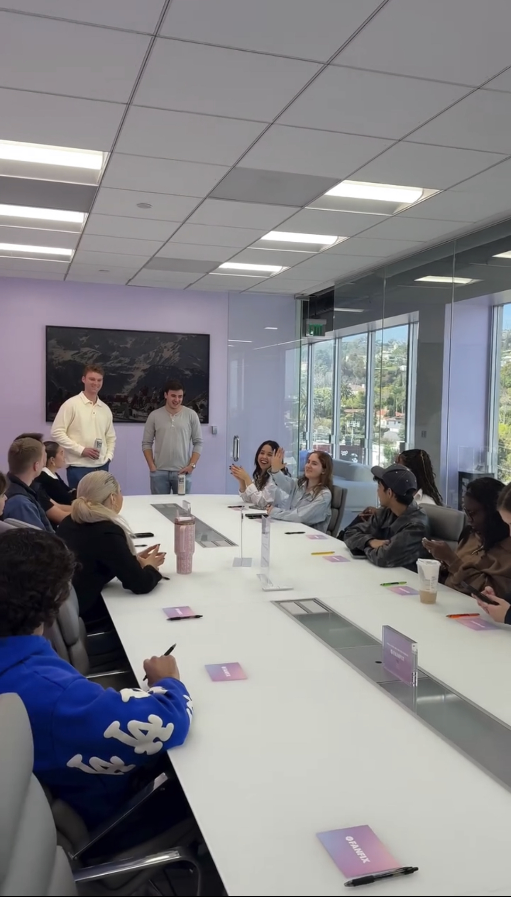

I was listening to a podcast yesterday where Harry Gestetner, who I’ve highlighted on here several times, was talking about being a founder and creating his second startup - Orion.
There was one sentence which stands out to me that applies to engineering careers – and careers in general – when deciding what to look for when evaluating whether you should work for a specific company or not.
When the podcast host - Amir Bormand - asked Harry on his podcast (linked here) whether the goal when starting a business is to eventually exit, Harry did mention that, yes, it’s about hopefully creating a great product and being very mission driven, but also that:
I think we [as founders are] pretty transparent, that the goal of most businesses is [to have] a life-changing event [financially] for your employees and investors.
And if you can do that, then as a byproduct, you do well as a founder as well.
I think that as a young engineer, this insight very much applies to you if you’re trying to figure out what to look for in a company and where you potentially want to work.
While money shouldn’t be the ONLY thing you care about, aiming to work for a company where one of its main goals is to produce “a life changing financial event for its employees (and investors/founders)” is probably actually a good heuristic for where to work.
And beyond this, I think that the other factors that matter (as I’ve mentioned in detail in other articles) are: skill-building, getting to solve the hardest problems and being empowered to solve them efficiently, end-to-end ownership, picking a company with a good vision, and picking a good niche regardless of which specific company you end up at.
I also mentioned that if you do pick a startup, prioritize a high-growth startup since that will have the most upside both in terms of equity gain and in terms of skill-building – even if the hours are longer and so on and so forth.
But overall, picking one that aims to produce a life-changing financial event for its employees is something which could make a huge difference in your life and career.
Along a similar vein, if you ever decide to start a company one day, I came upon a similar insight when I recently spoke with a very successful 27 year-old Colorado-based founder.
When I asked him what he’d do if he started another business (say, after a potential acquisition), he said that one of the main metrics that would guide him is:
Is this a company that I can turn around and sell within ~2 years?
This is very similar to Gestetner’s point that the goal of most companies is to have an acquisition – which, I’d argue, isn't purely about money.
Some people’s counter-argument might be that the “acquisition-centric” focus is only about money and greed, but my thinking is that it isn’t about that at all in most cases.
Instead, an acquisition is an indicator that your business has impacted people’s lives in a profound and good way, with you and your employees benefitting as a byproduct.
Furthermore, if your employees in particular benefit, it will drive them to work even harder and create an even better product, which will increase the impact the company has on its customers and the world – we’ve seen this with a famous space company that recently IPO’d.
While the space industry might have a longer timeline than other industries (with some exceptions, such as Mesh Optical Technologies which I highlight in a later article I’m currently drafting), the overall thinking should be roughly the same.
If you can successfully answer the question: “is this a company that I can eventually turn around and sell (in X number of years)?”, then it’s probably a solid company to start from this viewpoint.
By answering that, you’ll be able to maximize impact for you as the founder, your employees (or yourself, if you’re an employee joining a business like this and you receive equity), and your customers.